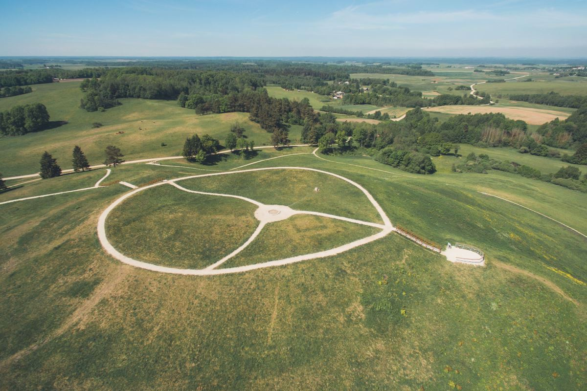

Lietuvos Piliakalniai – Istorijos ir Gamta Vienoje Vietoje
Lietuva garsėja savo unikalia istorija, o piliakalniai – vieni iš svarbiausių šios praeities liudininkų. Mūsų šalyje yra daugiau nei 850 piliakalnių, kurie išsidėstę vaizdingose vietovėse, apsupti miškų, upių ir ežerų. Kiekvienas piliakalnis slepia savitą istoriją – nuo senovės genčių gyvenviečių iki gynybinių tvirtovių, kurios gynė Lietuvos žemes nuo priešų.
Piliakalniai ne tik pasakoja apie praeitį, bet ir yra mėgstamos lankytinos vietos gamtos bei istorijos mylėtojams. Čia galite atrasti ne tik įspūdingą kraštovaizdį, bet ir pajusti ryšį su protėvių paveldu. Keliaukite, atraskite ir pažinkite – kiekvienas piliakalnis turi ką papasakoti!
Lietuvos piliakalniai

Šatrijos piliakalnis
Šatrija - vienas žymiausių archeologinių paminklų ne tik Žemaitijoje, bet ir Lietuvoje. Apie tai liudija gausūs archeologiniai radiniai: IX-XII a. degintiniai kapai, laidojimo urnos, ašariniai puodeliai, dubeniuoti akmenys, gintaro ir stiklo papuošalai, akmens kirvukai. Archeologų manymu, kalvos viršuje yra stovėjusi medinė pilis, o pašlaitėje žmonės gyveno jau nuo II a. prieš Kristų. Manoma, čia buvus vieno svarbiausiųsenojo lietuvių tikėjimo centrų, sunaikintų įvedus Žemaitijoje krikščionybę. Apie tai, jog pirmieji Žemaičių vyskupystės kunigai rezidavo Luokėje,o ne vyspupystės sostinėje Varniuose, kad prižiūrėtų pagonių šventvietę, savo veikaluose rašė Simonas Daukantas bei Motiejus Valančius.
{kind=link}